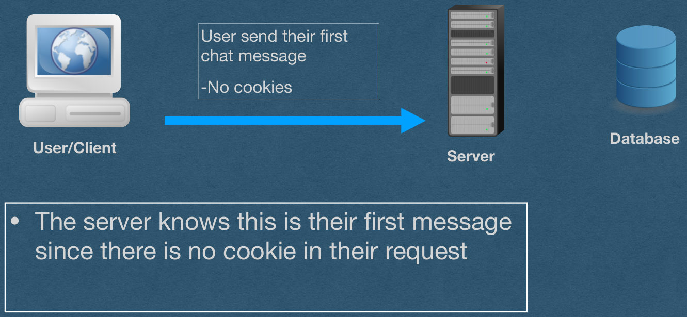
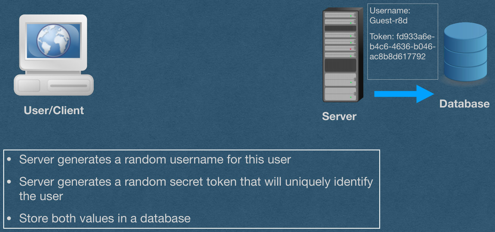
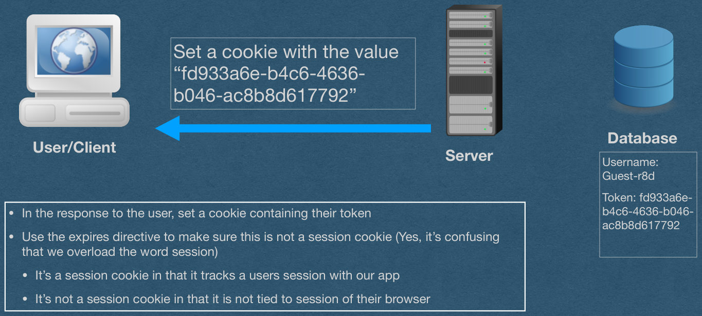
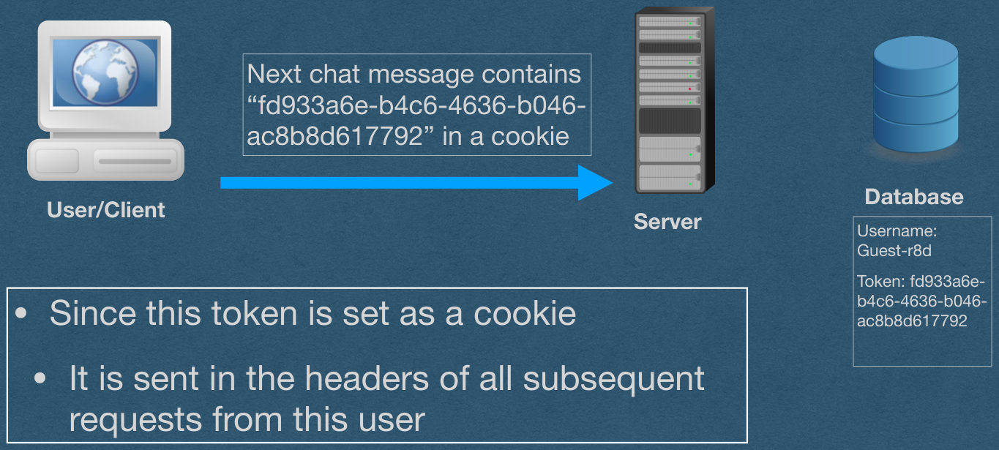
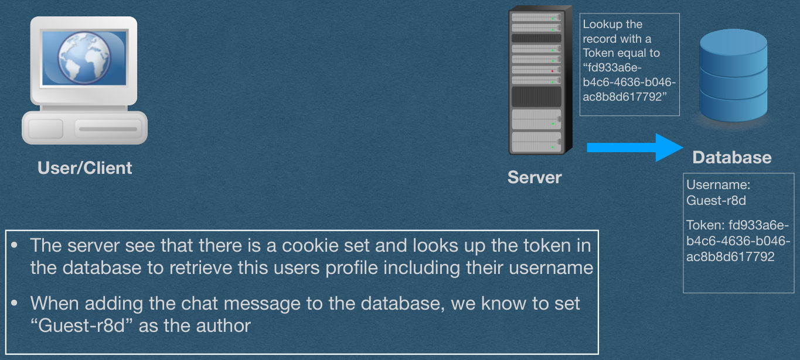
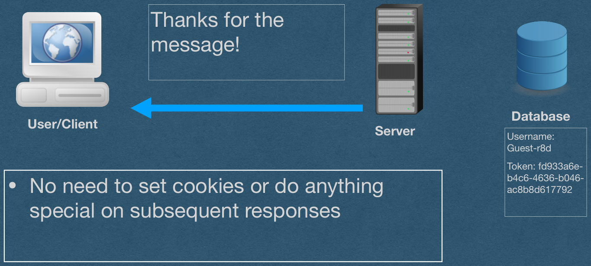

Cookies
CSE312 — Web Development
State
- HTTP is stateless
- Each HTTP request is handled independently
- Only the content of the request is used to generate the response
- Read the request type (GET/POST), path, headers, and body
- No other information can be requested from the client
State
- We often want the client to have state
- State is required for authentication
- Otherwise, each client would have to enter their username/password for every action they take
- We want to remember that a client is logged in
- Subsequent requests are already authenticated
- We cannot do this with HTTP alone
Cookies
- Cookies allow us to "remember" information about a user
- Cookies function through HTTP headers
- Tell the client to set a cookie using a header in your response
- Client sends that cookie in a header on all subsequent requests
Cookies
- Since cookies work through HTTP headers:
Set-Cookie
- The Set-Cookie header is used by servers to tell the client to set a cookie
- Cookies are sent as key-value pairs
- Syntax:
- Example:
- Set-Cookie: id=X6kAwpgW29M
- Set-Cookie: visits=4
Set-Cookie
- Only 1 cookie can be set using Set-Cookie
- If you want to set multiple cookies
- Send multiple Set-Cookie headers
- Yes, duplicate headers with the same name are allowed
- *In this course, we won't worry about this in our request parsing code, but you may want to address it in your response class (Technically not required)
- The browser must handle this when it parses our headers
Cookie
- The header used by clients to deliver all cookies that have been set
- Syntax [Similar to Set-Cookie]:
<key>=<value>- All cookies in one header
- Multiple cookies separated by ;
- Example:
- Cookie: id=X6kAwpgW29M; visits=4
Directives
- Can add directives when setting a cookie
- After the cookie, use a ; to specify a directive
- Separate multiple directives with ;
- ex: Set-Cookie: id=X6kAwpgW29M;
<directive1>; <directive2>
Directives - Expires
- Expires
- The exact time when the cookie should be deleted
- Must be in the format:
<day-name>, <day> <month> <year> <hour>:<minute>:<second> GMT
- Set-Cookie: id=X6kAwpgW29M; Expires=Wed, 7 Feb 2024 16:35:00 GMT
Directives - Max-Age
- Max-Age
- Set the number of second before the cookie expires
- Much simpler than setting the expires directive
- Set-Cookie: id=X6kAwpgW29M; Max-Age=3600
- This cookie expires 1 hour after it is set
Directives - Session Cookies
- If neither Expires nor Max-Age are set:
- The cookie is a session cookie
- It will be deleted when the user ends the session
- ie. The cookie is deleted when the browser is closed
- Check your cookies in the browser console to ensure that your directives are set properly (ie. under expires, session cookies will say "session")
Directives - Secure
- Secure
- Only send this cookie over HTTPS
- The cookie will not be sent over an HTTP connection
- Protects against packet-sniffing
- Using wifi, everyone in wifi range can read your HTTP requests
- They cannot read your HTTPS requests since they are encrypted
- If used on your HW server with HTTP, the browser won't send these cookies
- Set-Cookie: id=X6kAwpgW29M; Secure
Directives - HttpOnly
- HttpOnly
- Don't let anyone read or change this cookie using JavaScript
- Prevents hijackers from reading/changing your cookies with a JavaScript injection attack (XSS Attack)
- These cookies are not returned when "document.cookie" is accessed
- Can still access these cookies from the browser console
- An attacker with access to your machine has all your cookies
- Set-Cookie: id=X6kAwpgW29M; HttpOnly
Directives - Path
- Path
- Specify a prefix that the path must match for the cookie to be sent
- Set-Cookie: id=X6kAwpgW29M; Path=/posts
- Cookie is only sent when the requested path begins with /posts
Directives - SameSite
- SameSite
- Determines when the cookie will be sent on 3rd party requests
- Lax - Cookie only sent when navigating to your page -and- all 1st party requests
- The default setting if SameSite is not set
- Strict - The cookie is only sent on 1st party requests
- ie. The cookie is only sent to your server when browsing your page
- None - The cookie is always sent. Requires the secure directive to also be set
- Set-Cookie: id=X6kAwpgW29M; SameSite=Lax
- Set-Cookie: id=X6kAwpgW29M; SameSite=Strict
- Set-Cookie: id=X6kAwpgW29M; SameSite=None; Secure
Client-Side Cookies
- The client can also set and change their cookies
- Do not trust the value stored in a cookie!
- If a cookie is important for security
- Client can read/set cookies with JavaScript (Unless HTTPOnly is set)
- Access cookies with "document.cookie"
Tracking User Sessions with Cookies
- We often want to know when multiple requests are sent by the same user
- Eg. A chat where a user sends multiple messages that should all contain the same "username"
- To accomplish this:
- When they send their first message, create a profile for the user that will store all information about them in a database
- Generate a random token that is both stored in the database AND set as a cookie for the user
- Whenever you receive a request, lookup the token in your DB to retrieve the user's profile
Example
Tracking User Sessions
with Cookies
User Sessions
User send their first
chat message
-No cookies
Database
User/Client
Server
- The server knows this is their first message since there is no cookie in their request

User Sessions
Username:
Guest-r8d
Token: fd933a6e-
b4c6-4636-b046-
ac8b8d617792
Database
User/Client
Server
- Server generates a random username for this user
- Server generates a random secret token that will uniquely identify the user
- Store both values in a database

User Sessions
Set a cookie with the value
"fd933a6e-b4c6-4636-
b046-ac8b8d617792"
Database
User/Client
Server
Username:
Guest-r8d
Token: fd933a6e-
b4c6-4636-b046-
ac8b8d617792
- In the response to the user, set a cookie containing their token
- Use the expires directive to make sure this is not a session cookie (Yes, it's confusing that we overload the word session)
- It's a session cookie in that it tracks a users session with our app
- It's not a session cookie in that it is not tied to session of their browser

User Sessions
Next chat message contains
"fd933a6e-b4c6-4636-b046-
ac8b8d617792" in a cookie
Database
User/Client
Server
Username:
Guest-r8d
Token: fd933a6e-
b4c6-4636-b046-
ac8b8d617792
- Since this token is set as a cookie
- It is sent in the headers of all subsequent requests from this user

User Sessions
Lookup the
record with a
Token equal to
"fd933a6e-
b4c6-4636-b046-
ac8b8d617792"
Database
User/Client
Server
Username:
Guest-r8d
Token: fd933a6e-
b4c6-4636-b046-
ac8b8d617792
- The server see that there is a cookie set and looks up the token in the database to retrieve this users profile including their username
- When adding the chat message to the database, we know to set "Guest-r8d" as the author

User Sessions
Thanks for the
message!
Database
User/Client
Server
Username:
Guest-r8d
Token: fd933a6e-
b4c6-4636-b046-
ac8b8d617792
- No need to set cookies or do anything special on subsequent responses

User Sessions
- With multiple users:
- Each user has a different username and token
- The tokens are all secret so users cannot steal each others identities
- Usernames are public and displayed to all users in the chat
- Server identifies each user based on their token cookie